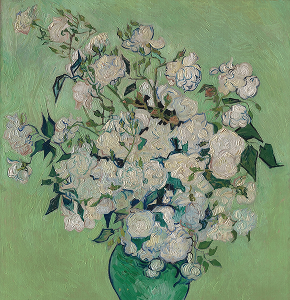

-
- VAN GOGH MUSEUM
- 고흐 공식 웹스토어 연결
- 고흐 박물관 티켓 구매
- 한국어 미지원
-
- INSTITUT VAN GOGH
- 반 고흐 연구소 한국 사무소
- 비영리 단체
- 프랑스 오베르 라부여관에 위치
-
- VAN GOGH 예술협회
- 예술 연구∙학술 사업
- 전시∙공연 사업
- 교육∙인력양성 사업
- 출판∙콘텐츠 사업
WEBSITE
빈센트 반 고흐와 관련된 웹사이트입니다.
FLOWERS
해바라기로 유명한 고흐가 다른 꽃을 소재로 그린 작품을 소개합니다.
-
- Irises (1890)
- Vincent van Gogh
-

- Roses (1890)
- Vincent van Gogh
-
- Sprig of flowering almond in a glass (1888)
- Vincent van Gogh
-
- Bouquet of Flowers in a Vase (1890)
- Vincent van Gogh
-
- Vase with gladioli and China asters (1886)
- Vincent van Gogh
-
- Vase with Chinese asters and gladioli (1886)
- Vincent van Gogh
TYPE OF PIECE
반 고흐가 그린 작품을 분야별로 소개합니다.

-
- Portrait 인물화
-
동생 테오(Theodore van Gogh)에게 쓴 편지에서 반 고흐는
“내 영혼에까지 감동을 주는 것은 오직 인물 뿐”,
“인간을, 살아있는 존재를 그린다는 것은 정말 대단한 일이다.
물론 그 일이 힘들긴 하지만, 아주 대단한 일임이 분명하다.”고 말하곤 했습니다.
-
- Sketch 스케치
-
스케치에는 채색에 대한 대략적인 계획이 담겨 있어야 합니다.
어느 부분을 강조하고 어느 부분을 생략할지, 빛의 방향과 강도는 어떻게 할지,
윤곽선은 어디를 감추고 어디를 드러낼지, 하이라이트는 어디로 하고
전체적인 색감은 어떻게 할지 등을 자신의 의도와 관련지어 생각해 보는 것,
본인만의 스타일이 뚜렷한 반 고흐는 스케치에도 그러한 의도가 드러납니다.
-
- Landscape Painting 풍경화
-
풍경화란 풍경을 주제로 한 회화를 말합니다.
‘풍경’이라는 말은 원래 네덜란드어에 어원을 둔 화가들의 용어이며,
회화에서 자연 경관을 나타내는 것을 기술하기 위해 16세기 후반에 처음 사용하였습니다.
자연을 사랑하던 반 고흐도 여럿 풍경화를 남겼습니다.
-
- Still Life 정물화
-
정물에 대한 사고방식은 생활의 기록이며,
그리는 사람의 마음에 따라서 서민의 생활, 또한 심상을 정물에 담아 표현할 수도 있습니다.
정물화에서는 시대·풍토·민족·전통을 엿볼 수 있기에
반 고흐의 그림을 관찰해보면 당 시대의 인간의 생활과 취미를 느낄 수도 있습니다.
CONTACT US
빈센트 반 고흐(Vincent van Gogh)에 관한 모든 정보에 깊은 관심이 있으며,
그의 생애, 작품, 예술사적 의의 등 관련된 어떠한 내용도 환영합니다.